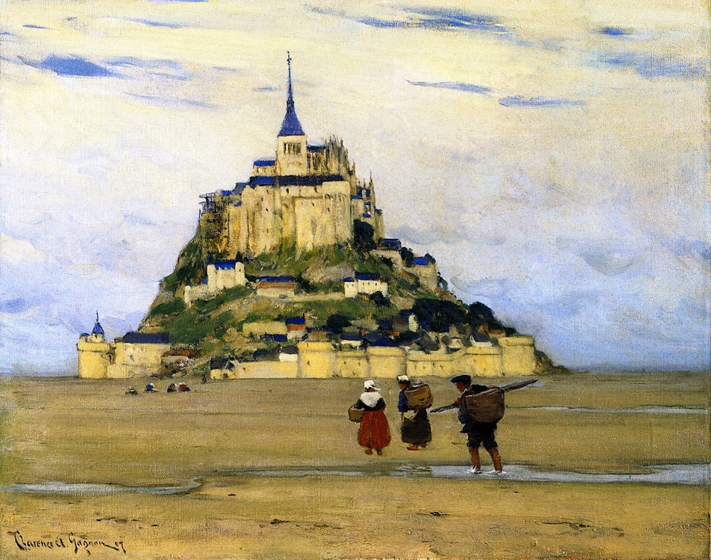

Krajobrazy Rilkego
Mont Saint-Michel
Jeszcze tyle mam Ci do opowiedzenia z Paryża, musisz posłuchać jeszcze o Mont Saint-Michel i o gotyckim kościele Archanioła, który się wznosi na północnym wybrzeżu Normandii, niemal całkowicie oblany morzem, i o wielu, wielu innych rzeczach, które mnie zachwycały, chciałbym Ci jeszcze mówić i choć w cząstce móc Ci je przekazać.
— Rilke w liście do Lou Andreas-Salomé (przeł. W. Markowska)
Clarence Gagnon „Mont-Saint-Michel, Morning”, 1907